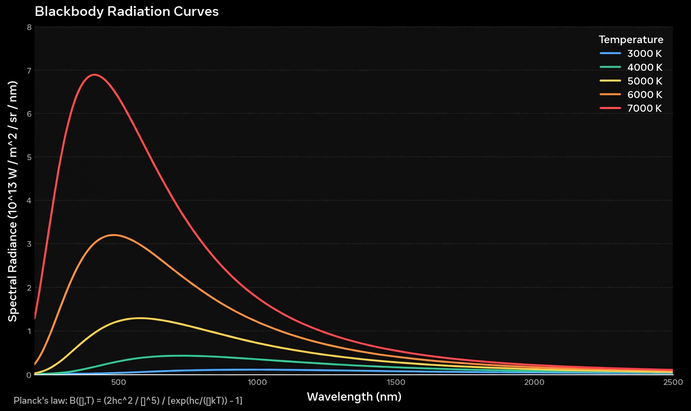

| Planck's law | |
|---|---|
 | |
| Proposed by | Max Planck, 1900 |
| Describes | Spectral radiance of blackbody radiation |
| Key constant | Planck constant, h = 6.62607015×10−34 J·s |
| Limiting cases | Wien's law, Rayleigh–Jeans law, Stefan–Boltzmann law |
Planck's law describes the spectral density of electromagnetic radiation emitted by a black body in thermal equilibrium at a given temperature T, when no matter or energy is exchanged with its surroundings. Formulated by Max Planck in 1900, it resolved the "ultraviolet catastrophe" of classical theory and introduced the quantum of action — the founding result of quantum mechanics.
where h is the Planck constant, c the speed of light, kB the Boltzmann constant, ν the frequency, and T the absolute temperature. Planck derived the law by postulating that electromagnetic energy could be emitted only in quantised form, in packets E = hν. He presented the derivation to the German Physical Society on 14 December 1900, a date often taken as the birthday of quantum physics.
At high frequencies Planck's law reduces to Wien's approximation; at low frequencies it reduces to the classical Rayleigh–Jeans law. Differentiating with respect to wavelength yields Wien's displacement law, which locates the peak of the spectrum, and integrating over all frequencies yields the Stefan–Boltzmann law for total emitted power, proportional to T4.
The law underlies pyrometry (measuring temperature from thermal radiation), the analysis of stellar spectra, climate physics, and the interpretation of the cosmic microwave background, whose spectrum matches a 2.725 K blackbody with extraordinary precision.